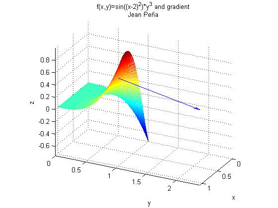

%Jean Pena function main %clear clf; clc; %P(0.6, 0.8, f(0.6,0.8)) x0=0.6; y0=0.8; %f(x,y) syms x y; f=@(x,y)sin((x-2).^2).*y.^3; %find f(0.6, 0.8) z=f(x0,y0); %getting gradient vector dx=diff(f(x,y),x); %derivative dy=diff(f(x,y),y); dx=@(x,y)subs(dx); %anonomize dy=@(x,y)subs(dy); dx=dx(x0,y0); %input values dy=dy(x0,y0); %graph f(x,y) in [0,1]x[0,1] x=0:0.01:1; y=x; [x,y] = meshgrid(x,y); f = f(x,y); mesh(x,y,f); hold on; %plot the gradient vector quiver3(x0,y0,z,dx, dy,0); %some formatting axis equal; title(sprintf('f(x,y)=sin((x-2)^2)*y^3 and gradient\nJean Peña')); xlabel('x'); ylabel('y'); zlabel('z'); view([2 1 1]);